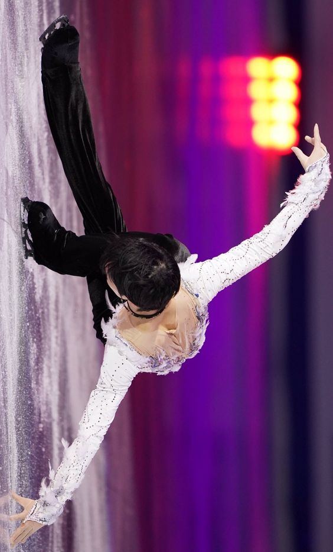

|
Analītiķi Hanju uzskata par izcilu slidotāju, kas pazīstams ar saviem augsta līmeņa tehniskajiem elementiem, kā arī nobriedušu un daudzpusīgu mākslinieciskumu. Viņa sniegums bieži tiek raksturots kā "ideāls prasmju, spēka un elegances apvienojums". Saskaņā ar četrkārtējā olimpiskā medaļnieka Jevgeņija Pļuščenko teikto, Hanju bija "izšķirts pārsvars pār citiem slidotājiem sava priekšnesuma pilnīgumā — griezienos, slidošanas prasmēs, pārejās starp lēcieniem un mūzikas interpretāciju". Divkārtējais pasaules čempions Stefans Lemjēls viņu raksturoja kā "vispilnīgāko sportistu daiļslidošanā, iespējams, jebkad."

Hanyu ir pazīstams ar savu spēju radīt slidošanas ātrumu "no nekurienes" un veikt lielas distances tikai ar dažiem grūdieniem. Spēja paātrināt ar dažiem grūdieniem ļauj Hanyu izpildīt savus lēcienus no dažādiem sarežģītiem iegājieniem. Ievērības cienīgi ir viņa raksturīgā trīskāršā Aksela lēciena ,twizzle un spread eagle. Hanju ir pazīstams arī ar savu spēcīgo velvju paņēmienu ar minimālu iepriekšēju rotāciju uz ledus pacelšanās brīdī, sasniedzot iespaidīga izmēra trajektorijas.
|